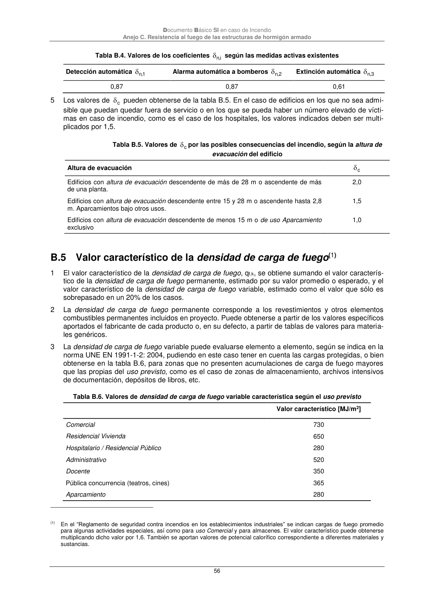

DB-SI Seguridad en caso de incendio · edición 2025-03-04 · capa oficial
Documento DB-SI-oficial · SHA-256 del PDF 0a2e78cd62471d9cc5cfe2efbc6aa39fdbad73c124aea7b039f9de96c141e105
Copia fiel del PDF fuente · Fuente oficial
Ficha de la disposición en la fuente oficial
Formatos: JSON del segmento · Markdown
Anejo C. Resistencia al fuego de las estructuras de hormigón armado 56 Tabla B.4. Valores de los coeficientes i,n según las medidas activas existentes Detección automática 1,n Alarma automática a bomberos 2 ,n Extinción automática 3 ,n 0,87 0,87 0,61 5 Los valores de c pueden obtenerse de la tabla B.5. En el caso de edificios en los que no sea admi- sible que puedan quedar fuera de servicio o en los que se pueda haber un número elevado de vícti- mas en caso de incendio, como es el caso de los hospitales, los valores indicados deben ser multi- plicados por 1,5. Tabla B.5. Valores de c por las posibles consecuencias del incendio, según la altura de evacuación del edificio Altura de evacuación c Edificios con altura de evacuación descendente de más de 28 m o ascendente de más de una planta. 2,0 Edificios con altura de evacuación descendente entre 15 y 28 m o ascendente hasta 2,8 m. Aparcamientos bajo otros usos. 1,5 Edificios con altura de evacuación descendente de menos 15 m o de uso Aparcamiento exclusivo 1,0
